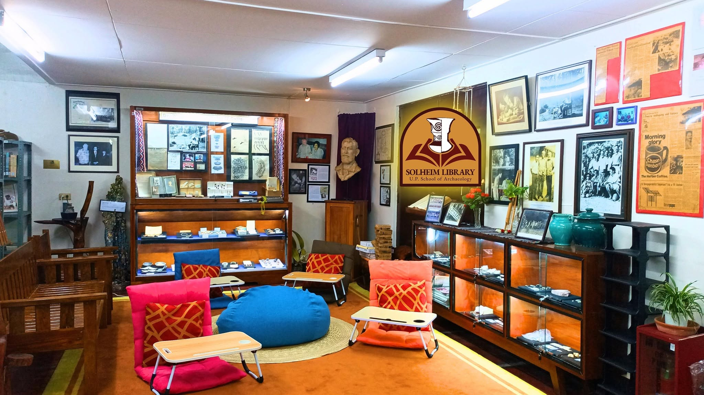

Latest Progress Report
First Client Meeting
Conducted a successful initial interview with the client. This consultation enabled the team to clearly define the target audience, map out the core business logic, and formally document the preliminary software specifications necessary to establish the project's foundation.